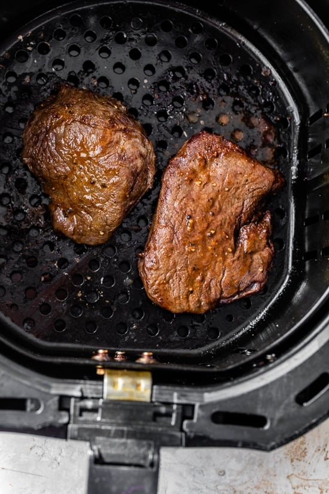

Make perfect Air Fryer Steak that is seared on the outside and juicy on the inside. Air frying steak is quick and easy with no splatter or mess in the kitchen! We usually eat it with baked potatoes, smashed potatoes, or mashed potatoes and a vegetable, like roasted green beans or asparagus. I do recommend making sure your steaks are at least 1 inch thick. Thinner steaks cook too fast without getting a chance to brown. A little oil rubbed on the steaks helps the steaks brown better. Let's get cooking!


Prep time: 5 minutes Cook time: 10 minutes Serving: 4 servings
INGREDIENTS
- 1 teaspoon garlic powder
- 1/2 teaspoon sweet paprika
- 1 teaspoon salt
- 1/4 teaspoon black pepper
- 4 steaks, 1 inch thick
- olive oil spray
INSTRUCTIONS
- Combine the spices in a small bowl.
- Spray the steak with olive oil and coat both sides with the spices.
- Preheat the air fryer so the basket gets hot. For a 1-inch steak, air fry 400F 10 minutes turning halfway, for medium rare, for medium, cook 12 minutes, flipping halfway. See temp chart below, time may vary slightly with different air fryer models, and the thickness of the steaks.
- Finish with a pinch of more salt and black pepper.
- Let it rest, tented with foil 5 minutes before slicing.